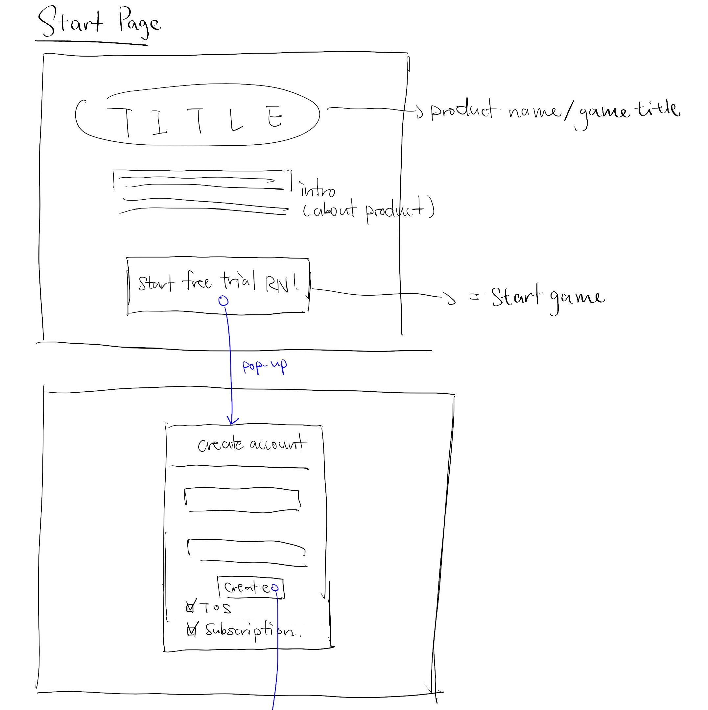
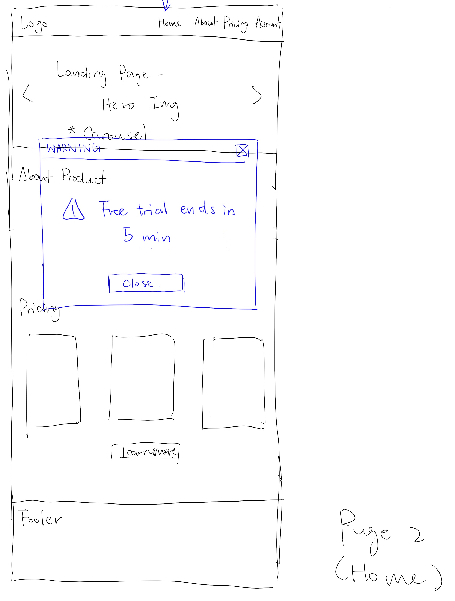
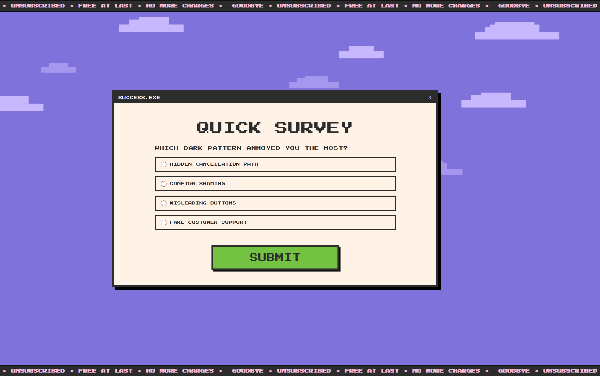
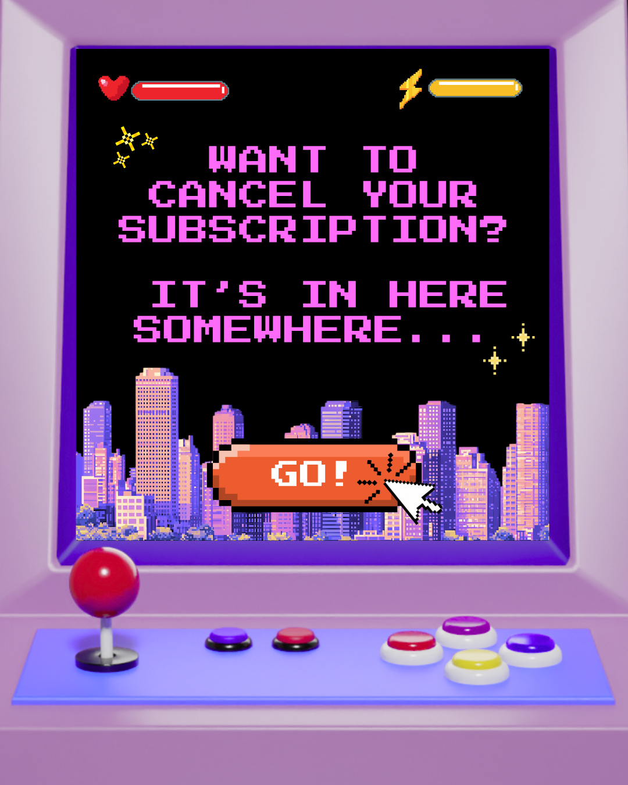
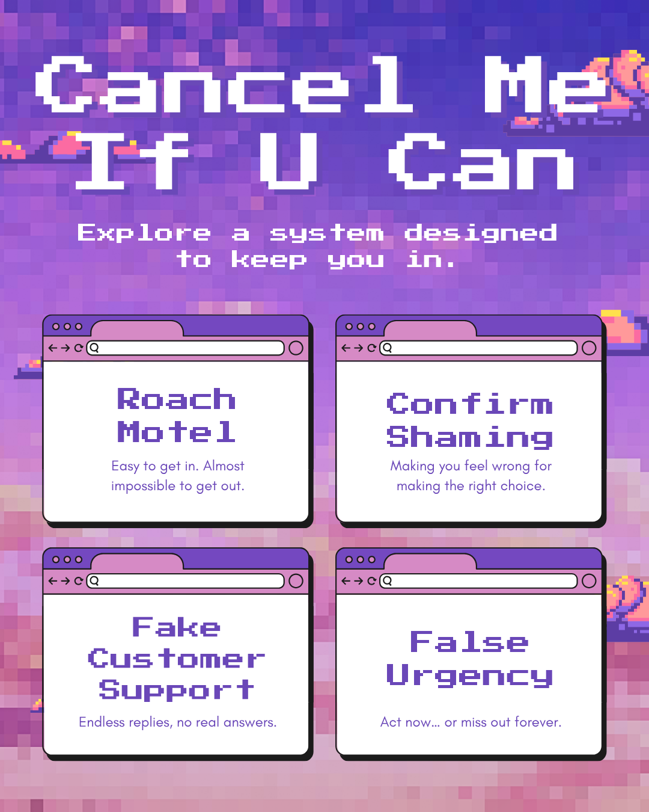
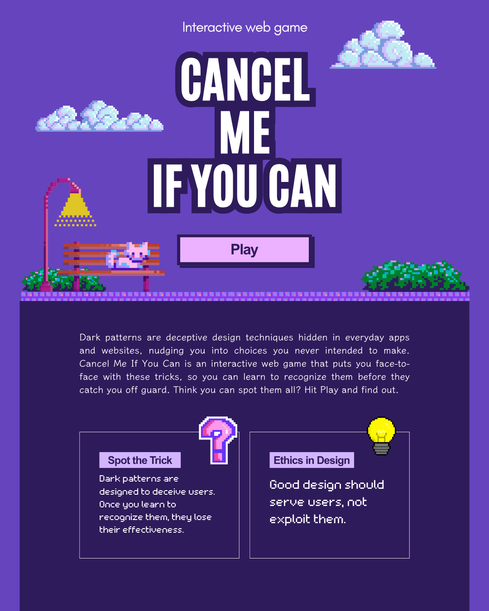
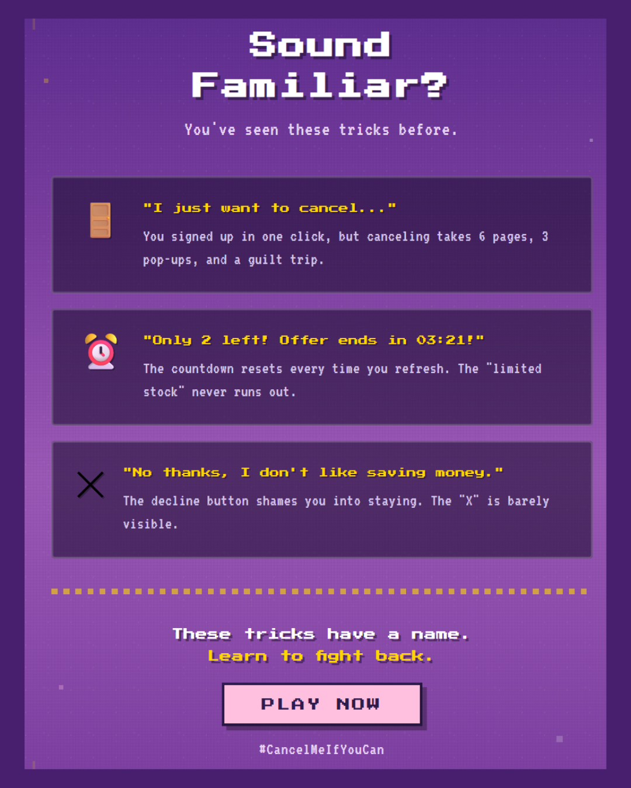

Find the cancel button before time runs out!
Click here or the image to visit website
context
This project is situated within the context of dark pattern awareness, with the aim of exposing how interface design can subtly manipulate users into unintended actions. Rather than presenting these concepts through static explanations, the game adopts an educational and experiential approach, allowing players to navigate confusing interfaces, encounter manipulative design tactics, and reflect on their own decision-making process.
In particular, the game focuses on subscription systems, where users are not explicitly prevented from leaving, but are instead subtly guided away from doing so.
Design Process
The development process began with research into common dark patterns, such as roach motel, confirm shaming, and misdirection, alongside an analysis of real-world subscription flows. Based on these insights, we created low-fidelity wireframes for key interfaces, including the homepage, account settings, and subscription pathways.
The experience was then designed as a navigational maze, where players progress through layered menus, loops, and dead ends. Interaction design focused on implementing specific mechanics such as misleading buttons, emotional prompts, fake support systems, and time pressure to simulate real-world manipulation.
The prototype was built as a web-based interactive experience, with iterative testing used to refine user flow, adjust difficulty, and enhance clarity while maintaining intentional friction.

wireframe of game title page

wireframe of home page

wire frame of other pages
Survey & Data Visualisation
To capture player responses, the game includes a short survey at the end of the experience, asking users which dark pattern frustrated them the most. Responses are stored using Firebase and visualised in real time through a chart, allowing players to see how others experienced similar forms of manipulation.
This feature transforms individual frustration into collective insight, making the impact of dark patterns more visible and measurable.
These findings highlighted that the main issue was not missing features, but a lack of interaction clarity and control, which shifted our focus toward improving usability rather than adding complexity.

Marketing Plan & Materials
The project adopts a multi-platform strategy to raise awareness beyond gameplay. This includes an animated explainer video that introduces dark patterns in an accessible format, an Instagram campaign with visually engaging and mobile-friendly content, and a Twitter/X thread that breaks down the topic through interactive discussion and polling.
In addition, promotional posters and visual materials were designed to communicate the project’s core message in a clear and impactful way.




Marketing posters
Future Development
- Expand the game to include additional dark patterns, such as forced continuity, hidden costs, and interface interference.
- Introduce adaptive difficulty that adjusts based on player behavior and navigation patterns.
- Enhance the survey system with deeper data analysis and comparative insights across user groups.
- Develop the project for educational use, including classroom integration and UX workshops.
- Improve accessibility through clearer navigation, readability, and alternative interaction methods.
- Refine UI/UX to better balance challenge, clarity, and player engagement.
- Add more narrative elements to strengthen immersion and emotional impact.